huashu-design
一句话出网页、App 原型、可编辑 PPTX、动画和信息图，内置 12 种中文与东亚版式。
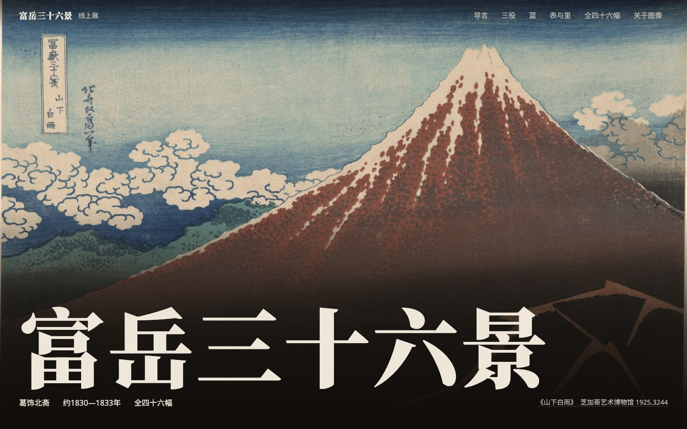
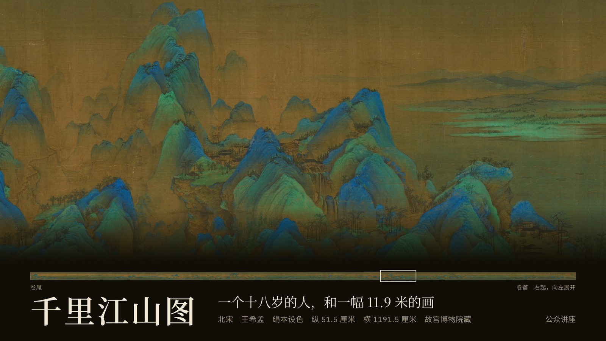
logo-design-skill
把 Agent 变成有流程纪律的标志设计师：先交 3 个黑白概念，再自动测试 SVG。
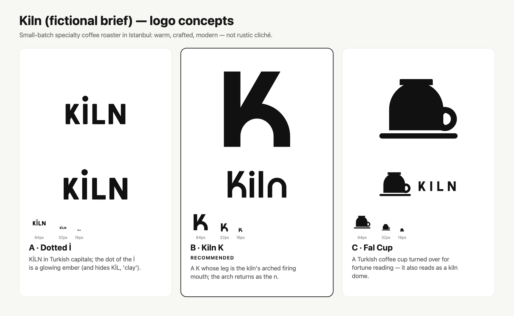
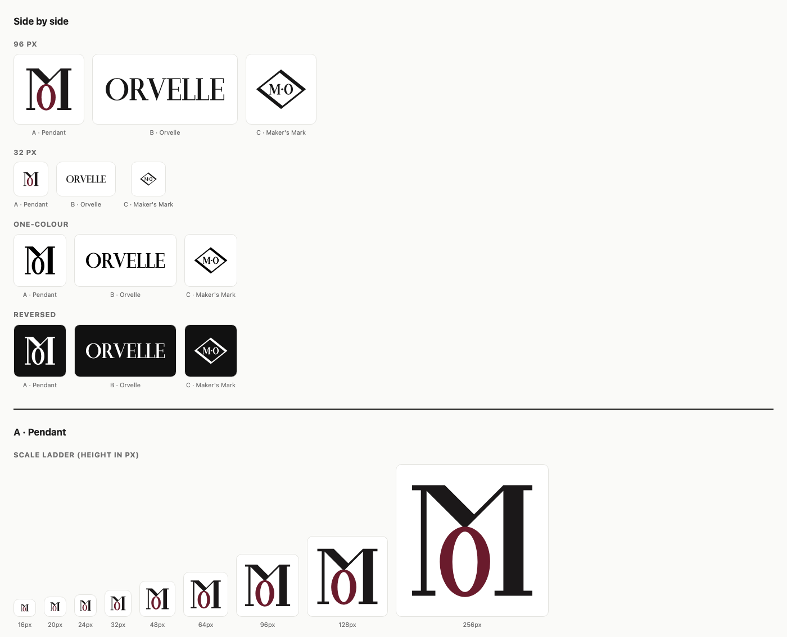
design-dna
把参考图、截图或网址拆成可复用的设计基因 JSON，并用像素实测校验色差。
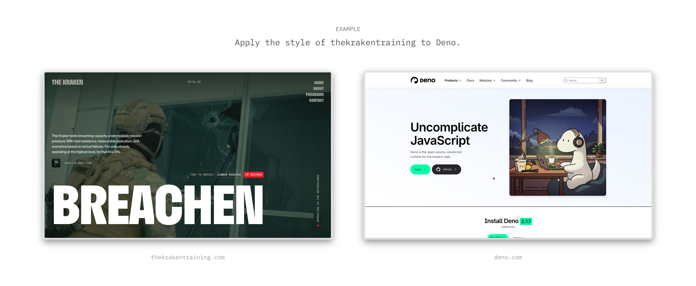
frontend-design · canvas-design
官方审美基座：网页先定方向再写代码；海报先立视觉哲学再出图。
该项目未提供介绍图：仓库 README 与对应技能目录中均没有介绍图片。
ui-ux-pro-max-skill
本地可检索的设计系统字典，按行业推荐风格、色板与字体配对。

taste-skill
给 Agent 艺术指导、真实图片与浏览器自检，避免平均化的网页。

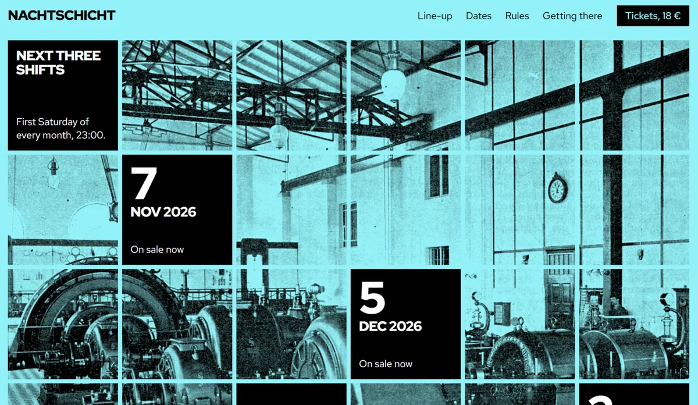
impeccable
一套设计动词指令（23 个有效），对已有界面做定点评审与修改；文案中的“Impact-Cable”即此项目。


diagram-design
用编辑出版级的克制风格画图表，可套用你的品牌字体与色板。
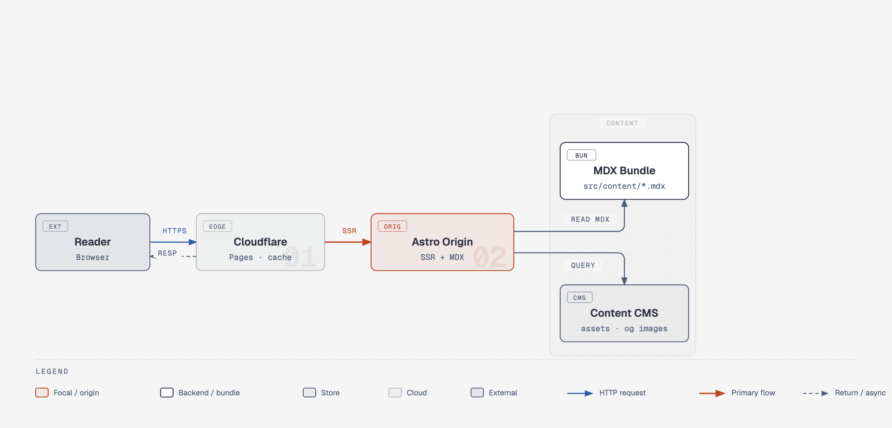
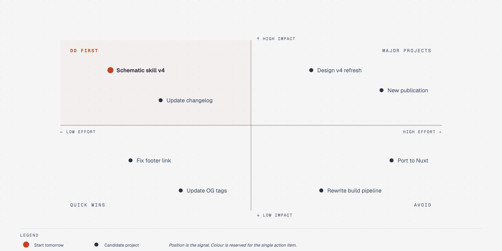
MengTo/Skills
设计师 Meng To 的 176 个实战 Skill，含 14 种 SVG 插画风格。
anti-slop
纯过滤器：拦截界面、文案、代码里的 AI 套路，不替你决定风格。
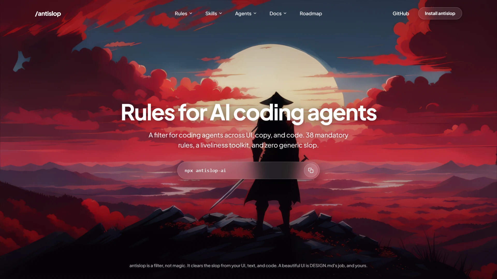
web-design-guidelines
按 Vercel 网页界面准则逐行审查 UI 代码，输出“文件:行号”问题清单。
该项目未提供介绍图：仓库 README 与对应技能目录中均没有介绍图片。
scroll-craft
电影感滚动叙事网站：情绪曲线、唯一高潮、逐帧检查。
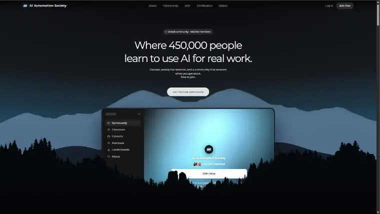
awesome-design-skills
67 套现成风格包，每套含 SKILL.md 与 DESIGN.md。
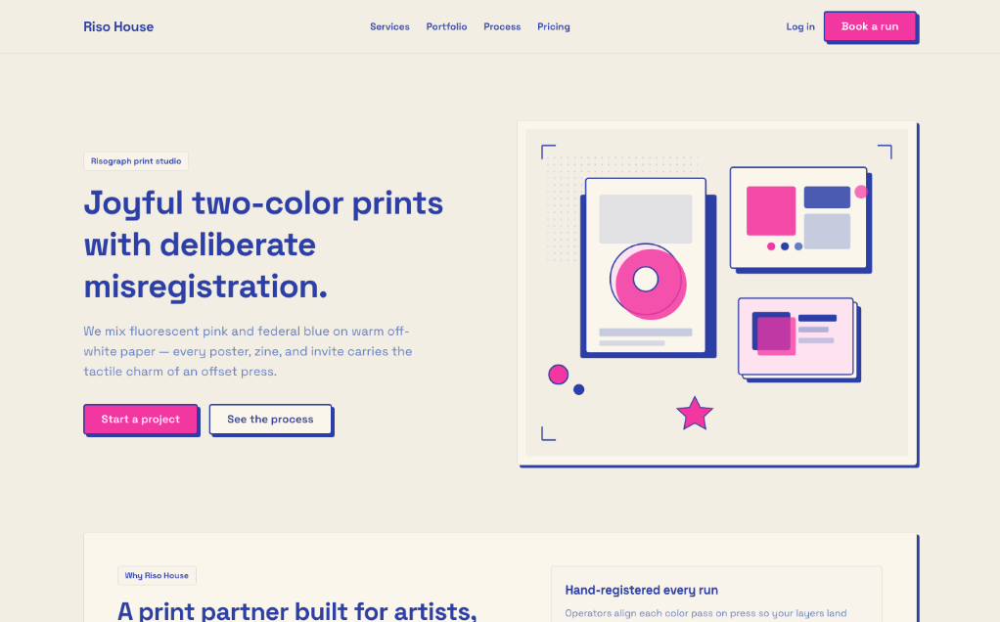
open-design
开源、本地优先的 AI 设计协作工作台。
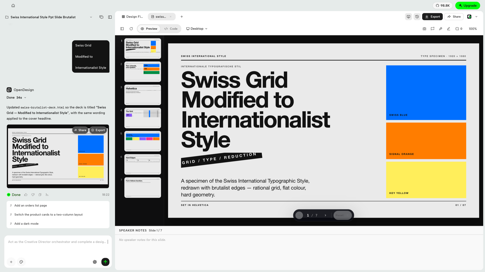